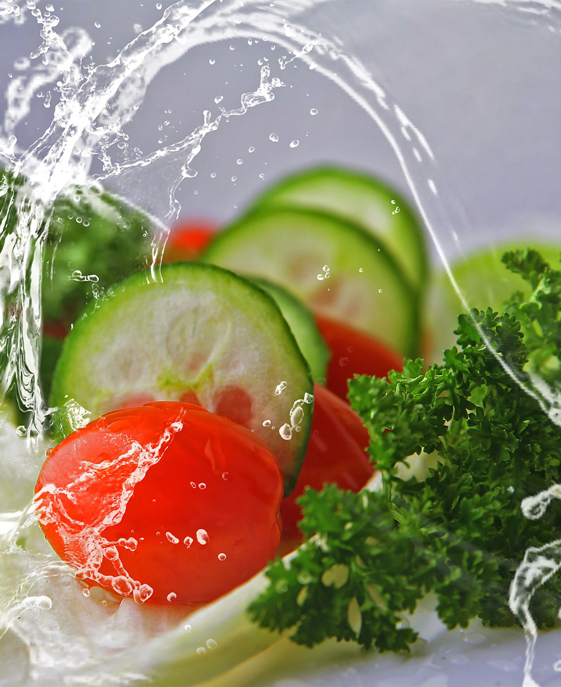

About Us
We believe that clean eating should be accessible, adventurous, and downright delicious. Our philosophy is that we function how we fuel.Founded in 2018, Fresh Green pairs art and science with creative and conscious, packing flavor into every original recipe. On the heels of a personal health scare, the founder envisioned Fresh Green as the place to quickly customize a wholesome meal without compromising taste or the quality of its unique ingredients. We simply putting convenience and benefit at the heart of clean eating.